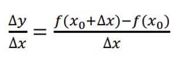
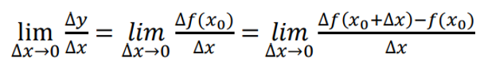
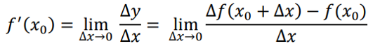
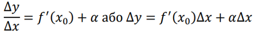
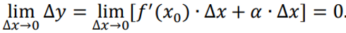
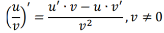
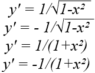

Похідна́ — основне поняття диференціального числення, що характеризує швидкість змінювання функції. Визначається як границя відношення приросту функції до приросту її аргументу, коли приріст аргументу прямує до нуля (якщо така границя існує). Функцію, що має скінченну похідну, називають диференційовною. Процес знаходження похідної функції називається диференціюва́нням.
"Лише диференціальне числення дає можливість природознавству зображати математично не тільки стан, але і процес руху" (Фрідріх Енгельс)
Означення похідної
Нехай задано функцію у= 𝑓(х) на деякому проміжку. Візьмемо довільну внутрішню точку 𝑥₀ цього проміжку, надамо значенню х₀ довільного приросту ∆х (число ∆х може бути як додатним, так і від’ємним), але такого, щоб точка х₀+∆х належала даному проміжку.
- обчислимо в точці х₀ приріст ∆у = ∆f(х₀) функції: ∆𝑦 = ∆𝑓(𝑥₀ ) = 𝑓(𝑥₀ + ∆𝑥) − 𝑓(𝑥₀ );
- складемо відношення
 - Знайдемо границю цього відношення за умови, що ∆х→0, тобто:

Якщо дана границя існує, то у називають похідною функції у = 𝑓(х) у точці х₀ і позначають 𝑓′(𝑥₀) або 𝑦′.
Похідною функції у=f(х) у точці х₀ називають границю відношення приросту функції до приросту аргументу за умови, що приріст аргументу прямує до нуля, а границя існує, тобто:
Похідну позначають ще й так: 𝑦′(𝑥), 𝑦′. Значення похідної при 𝑥 = 𝑎 позначається так: 𝑓 ′(𝑎).
- Функцію, яка має похідну в точці х₀, називають диференційовною в цій точці;
- Функцію, яка має похідну в кожній точці деякого проміжку, називають диференційованою на цьому проміжку. Операція знаходження похідної називається диференціюванням.
Зв’язок між диференціюванням й неперервністю функції в точці
Теорема. Якщо функція y = f (x) диференційовна в деякій точці 𝑥 = 𝑥₀, то функція в цій точці неперервна Зовнішній ресурс (стор.10)
Доведення.Якщо функція y = f (x) диференційована в точці 𝑥₀, то в цій точці виконується рівність lim ∆𝑥→0 Δ𝑦 Δ𝑥 = 𝑓 ′ (𝑥₀ ).
Застосуємо теорему (формулюємо її в скороченому вигляді): якщо lim 𝑦 = 𝑏, то 𝑦 = 𝑏 + 𝛼 (𝛼 – нескінченно мала функція). Тоді:

За означенням, функція неперервна в точці, якщо lim ∆𝑥→0 ∆𝑦 = 0. Перейдемо до границі в рівності при ∆𝑥 → 0:

Тобто функція 𝑦 = 𝑓(𝑥) неперервна в точці 𝑥₀.
Зауваження. Обернена теорема не виконується. Тобто, неперервна в деякій точці функція 𝑦 = 𝑓 (𝑥) не завжди має похідну в цій точці.
Основні теореми й правила диференціювання функцій
| Правило | Формула |
|---|---|
| Похідна суми (різниці) двох (і більше) функцій дорівнює сумі (різниці) похідних цих функцій | [𝑢 ± 𝑣] ′ = 𝑢 ′ ± 𝑣 ′ |
| Похідна добутку двох функцій u і v обчислюється за формулою | (𝑢 ∙ 𝑣) ′ = 𝑢 ′ ∙ 𝑣 + 𝑢 ∙ 𝑣 ′ |
| Похідна частки двох функцій обчислюється за формулою |  |
| Зауваження. Якщо одна з функцій, наприклад функція 𝑢(𝑥), є сталою величиною, тобто 𝑢 = С, то похідна обчислюється за формулою | [С 𝑣] ′ = С ′𝑣 + С 𝑣 ′ = {С′ = 0} = С 𝑣 ′ |
Теорема про похідну складної функції
Якщо функція 𝑦 = 𝑓 (𝑢) має похідну в точці u, а функція 𝑢 = 𝜑 (𝑥) – похідну в точці х, тоді складна функція 𝑦 = 𝑓[𝜑(𝑥)] має похідну в точці х, яка обчислюється за формулою 𝑦𝑥 ′ = 𝑦𝑢 ′ ∙ 𝑢𝑥 ′ .
Зазначимо, що індекси у формулі вказують, за якою змінною обчислюється похідна. Зовнішній ресурс (стор.16)
Таблиця похідних функцій
| № | Функції | Похідні |
|---|---|---|
| 1 | Постійна величина у = С, де С = const | yʹ = 0 |
| 2 | Степенева функція у = хⁿ | уʹ = nxⁿ⁻¹ |
| 3 | Показникова функція у = а ͯ , у = е ͯ |
уʹ = а ͯ ·ln a, yʹ = e ͯ |
| 4 | Логарифмічна функція у = logₐ x, y = ln |x| |
yʹ = 1/(x·ln a), yʹ = 1/x |
| 5 | Тригонометричні функції у = sin x, y = cos x, y = tg x, y = ctg x |
yʹ = cos x, yʹ = - sin x, yʹ = 1/cos²x, yʹ = - 1/sin²x |
| Зворотні тригонометричні функції у = arcsin x, y = arccos x, y = arctg x, y = arcctg x |
 |
Запитання для самоперевірки
- Що таке похідна функції?
- Означення
- Формула
- Як знайти похідну за означенням?
- Як знайти приріст функції?
- Яке відношення треба скласти?
- Яку границю треба знайти?
- Який геометричний зміст має похідна?
- Який фізичний зміст похідної?